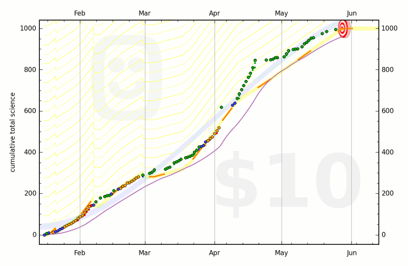

kuksenok /about /now
In response to the /now page movement and as a design alternative to an OurNows page.
Last Updated: Nov 1, 2016

Tracking my dissertation progress, in units of "science," which, here, mean anywhere between 15 minutes of very good work or 3 hours of very crappy work.
Things
- I am thinking a lot about how individuals do creative work in an evolving, social ecosystem of things. Here are some of the things in my life.
- New thing: GistNote, a highlighter for Chrome. It is replacing a pinterest board called "Readings" that has no further organization over the articles I pinned.
- Fave thing: Beeminder! Combined with RescueTime and Duolingo to help articulate actionable goals and track progress. Using it nearly daily for over a year - one goal, "write PhD dissertation" is pictured to the right.
- Thing-be-gone: 4 more major extractions in my quest to cull various online accounts: Mint.com, LinkedIn, Twitter, Behance
November is the perfectly cold, wet, dark month to make progress on The Big Work.
"I was moved beyond myself by the force of urgent necessity." — Antoine de Saint Exupery, The Little Prince